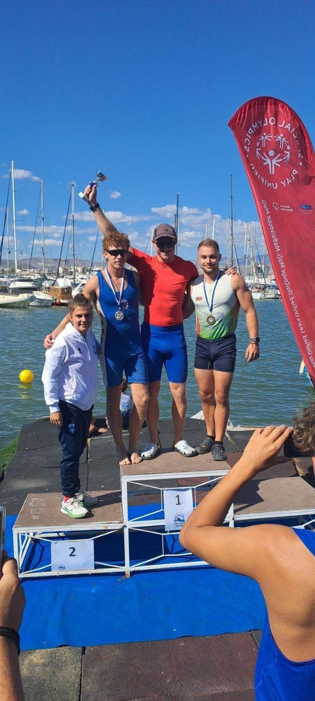
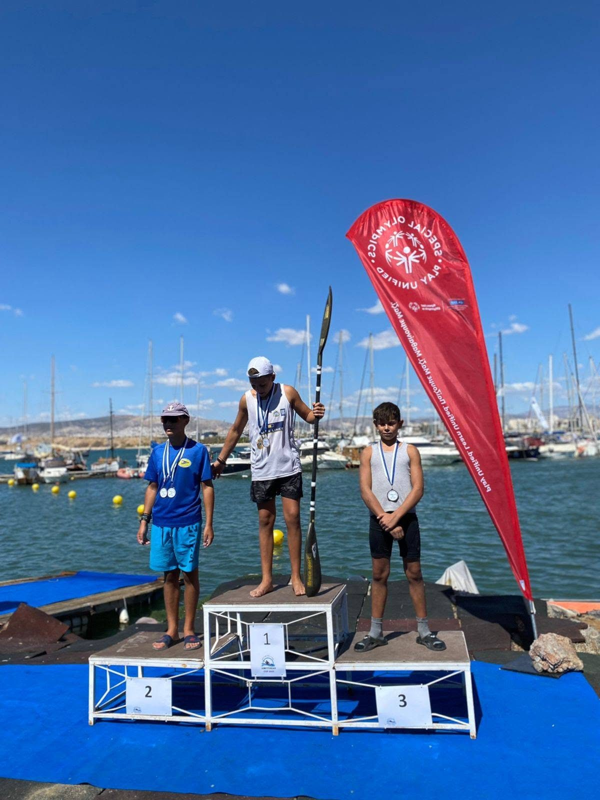
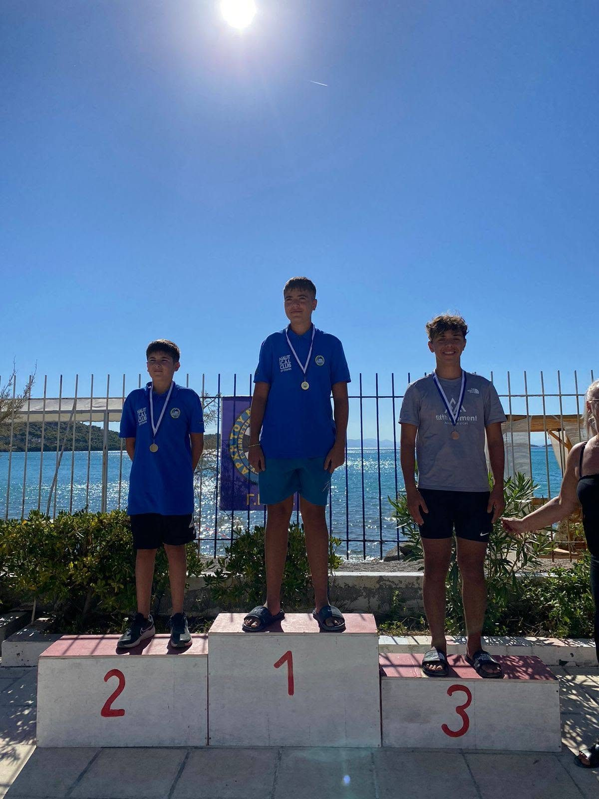
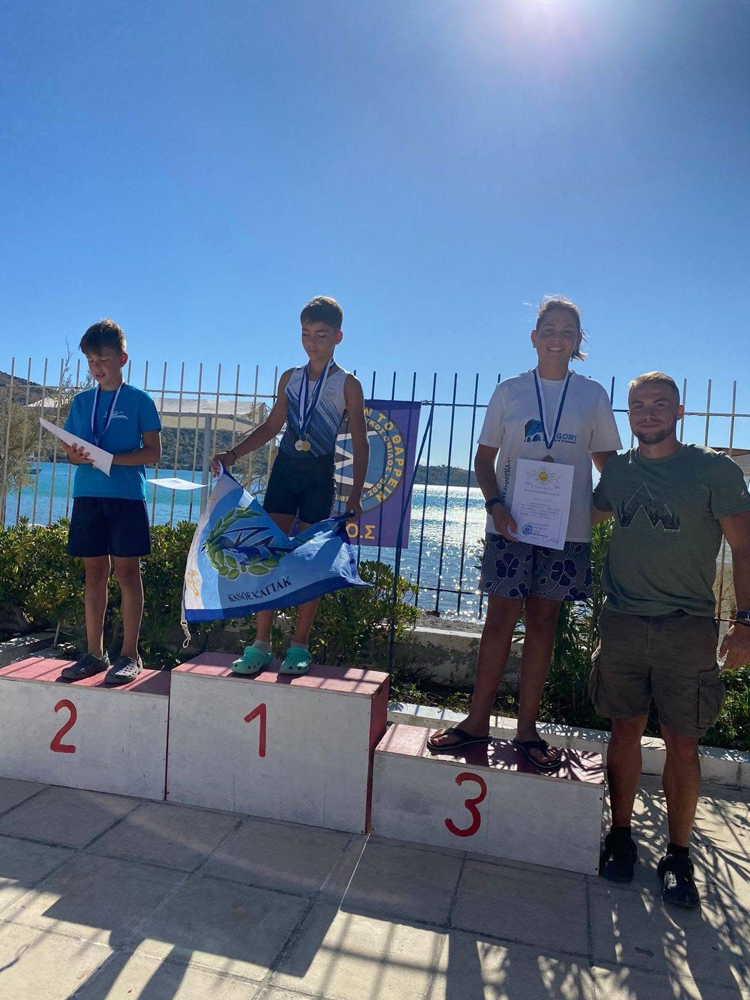
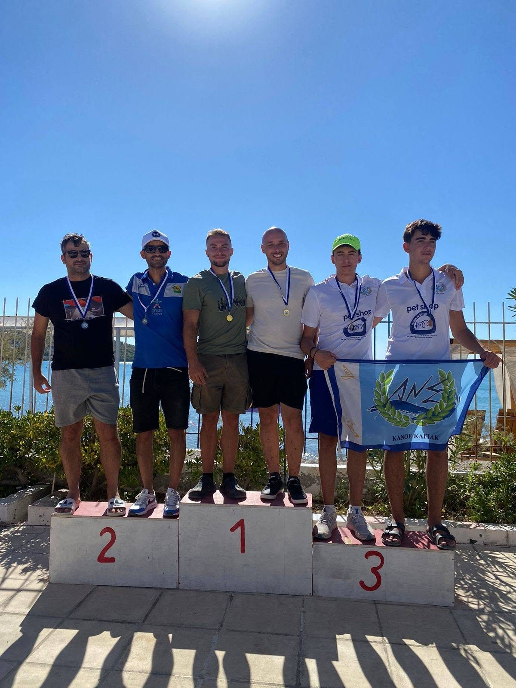
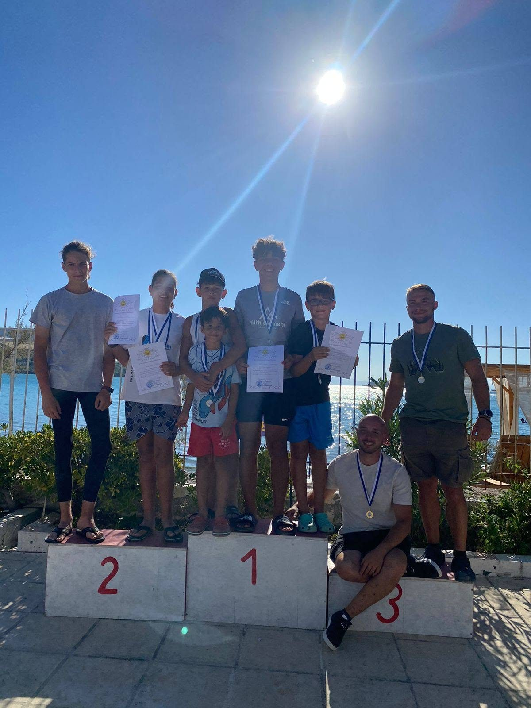

Διακρίσεις • ΝΟΠ
Οι αθλητές του ΝΟΠ στα βάθρα
Στιγμές από τις πρόσφατες αγωνιστικές επιτυχίες και την αγωνιστική ομάδα του Ομίλου.
Από τις ακαδημίες έως το αγωνιστικό τμήμα
Οι νέες φωτογραφίες του Ομίλου αποτυπώνουν τη συνέχεια της δουλειάς στις μικρότερες ηλικιακές κατηγορίες, τη συμμετοχή σε αγώνες και τη συλλογική προσπάθεια πίσω από κάθε διάκριση.
Το υλικό περιλαμβάνει στιγμές από βάθρα, απονομές, ομαδικές φωτογραφίες και αγωνιστικές παρουσίες των αθλητών του ΝΟΠ.





